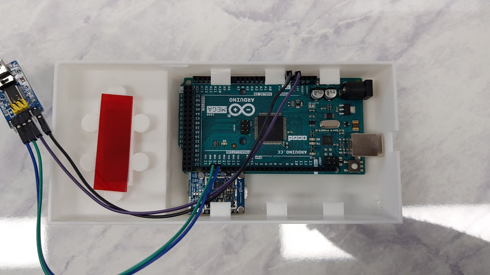
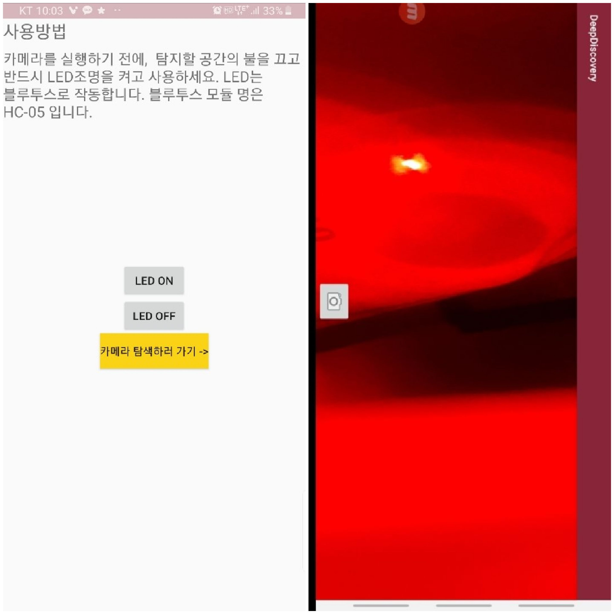

Deep Learning-based Hidden Camera Detection Technology
Third Place, 2019 Korea IT Businesswomen’s Association (IBWA) ICT Mentoring Competition
Leadership and Innovation
As the team leader, I spearheaded the development of a groundbreaking solution aimed at addressing a growing concern: hidden camera detection. Leveraging my expertise in Android Studio and deep learning algorithms, I led a team to create an innovative phone case and app system that could efficiently detect hidden cameras, ensuring privacy in sensitive environments. Our team’s effort culminated in winning third place nationwide, a remarkable achievement among numerous competitive entries.
Innovative Hidden Camera Detection Technology

We developed a multi-functional phone case equipped with advanced features including a FLIR thermal imaging camera, additional LED lights linked via Bluetooth, and a red film filter for enhanced detection. These components worked together to provide multiple layers of camera detection capability.
DeepDiscovery Application
The accompanying DeepDiscovery App integrated with the phone case served as the primary interface, offering three powerful methods of hidden camera detection:
- WiFi Scanning – Detects unusual WiFi signals that could indicate connected surveillance devices.
- Reflected Light Detection – Utilizes the red film and LED lights to reveal hidden lenses by identifying light reflections.
- Thermal Imaging – Pinpoints hotspots, a potential sign of concealed electronic devices.
Using a deep learning decision system, the app intelligently analyzed data to confirm whether a hidden camera was present, significantly enhancing the accuracy of detection.
Additional Features
WiFi Scanner detects suspicious WiFi networks in the vicinity, a common indication of surveillance devices.

By controlling LED lights, the phone case enhances the detection of hidden camera reflections, as shown on the screen.
Reporting and Response
Our app also included a feature to record the GPS location of any detected hidden cameras and send instant reports to the relevant authorities, ensuring rapid action in critical situations.